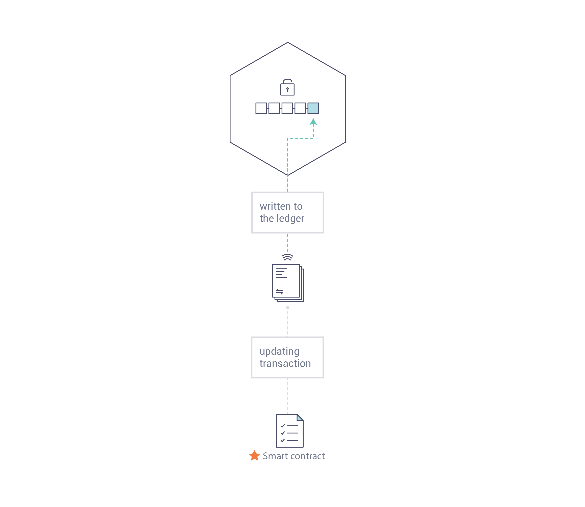

介绍¶
Hyperledger Fabric是一个分布式账本解决方案的平台，其基础是提供高度机密性、弹性、灵活性和可伸缩性的模块化架构。它旨在支持不同组件的可插入实现，并适应经济生态系统中存在的复杂性和复杂性。
我们建议初次使用的用户从通读下面介绍的剩余部分开始，以便熟悉区块链的工作原理以及Hyperledger Fabric的特定特性和组件。
如果您已经熟悉了区块链和Hyperledger Fabric，那么可以访问:doc:getting_started，然后在那里查看演示、技术规范和API等。
什么是区块链？¶
一个分布式账本
区块链网络的核心是一个分布式账本，它记录在网络上发生的所有交易。
区块链账本通常被描述为**去中心化的**，因为它是跨许多网络参与者复制的，每个参与者**协作**维护它。我们将看到，去中心化和协作是反映现实世界中企业交换商品和服务方式的强大属性。

除了去中心和协作之外，记录到区块链的信息是仅追加的，使用了加密技术，该技术可以保证，一旦将交易添加到账本中，就不能对其进行修改。这种“不可改”属性使确定信息来源变得很简单，因为参与者可以确定信息在事后没有被更改。这就是为什么区块链有时被描述为**证据系统**。
智能合约
为了支持信息的一致更新——并启用所有账本功能(交易、查询等)——区块链网络使用**智能合约**提供对账本的受控访问。
智能合约不仅是一种封装信息并使其在网络上保持简单的关键机制，还可以通过编写它们来允许参与者自动执行特定方面的交易。
例如，可以编写一个智能合约来规定货物的运输成本，其中运费根据货物到达的速度而变化。根据双方同意的条款并写在账本上，当收货时相应的资金自动转手。
共识
在整个网络中保持账本交易同步的过程——确保账本只有交易被适当的参与者批准时才更新，并且当账本确实更新时，它们以相同的交易顺序更新——被称为**共识**。

以后你会学到更多关于账本、智能合约和共识的知识。现在，只要将区块链看作是一个共享的、复制的交易系统就足够了，它通过智能合约进行更新，并通过一个称为共识的协作过程保持一致的同步。
为什么区块链有用?¶
当今的记录系统
今天的交易网络只不过是自保留业务记录以来就存在的网络的稍加更新的版本。一个**业务网络**的成员彼此进行交易，但是他们保持各自的交易记录。无论是16世纪的佛兰德挂毯，还是今天的证券，他们所做的交易都必须在每次出售时确定其来源，以确保出售一件物品拥有一系列所有权。
剩下的就是象这样的一个业务网络:

现代技术已经将这一过程从石碑和文件夹带到硬盘和云平台，但其底层结构是相同的。不存在统一的系统来管理网络参与者的身份，确定出处是如此费力需要几天清理证券交易(全世界的量在数万亿美元)，合同必须手动签署和执行,每个数据库系统中包含独特的信息,因此代表了一个单点故障。
尽管对可见性和信任的需求是明确的，但在当今信息和流程共享的破碎方法下，构建跨越业务网络的记录系统是不可能的。
区块链是不同的
如果商业网络有标准的方法在网络上建立身份、执行交易和存储数据，而不是用“现代”交易系统来表示效率低下的老鼠洞，那会怎么样?如果可以通过查看一列交易来确定资产的来源，而这些交易一旦写入，就不能更改，因此可以信任，那么该怎么办?
商业网络应该是这样的:

这是一个区块链网络，每个参与者都有自己复制的账本副本。除了共享账本信息，更新账本的过程也被共享。不像今天的系统，参与者的**私有**程序用于更新他们的**私有**账本，区块链系统有**共享**程序来更新**共享**账本。
区块链网络能够通过共享账本协调其业务网络，可以减少关联私有信息和处理的时间、成本和风险，同时提高信任和可见性。
您现在知道了区块链是什么以及它为什么有用。还有很多其他的重要细节，基本思想都与共享信息和过程有关。
什么是超级账本Fabric？¶
Linux基金会于2015年创建了Hyperledger项目，以推进跨行业的区块链技术。它不是宣布一个单一的区块链标准，而是鼓励通过一个社区过程以协作的方式开发区块链技术，并拥有鼓励开放知识产权和采用及时关键标准。
超级账本Fabric是超级账本中的区块链项目之一。和其他区块链技术一样，它有一个账本，使用智能合同，是一个参与者管理交易的系统。
超级账本结构与其他区块链系统的不同之处在于，它是**私有的**和**许可的**。与允许匿名参与网络的开放无许可系统(需要像“工作证明”这样的协议来验证交易并保护网络)不同，超级账本Fabric网络成员通过一个受信任的**成员服务提供者(MSP)**来注册。
超级账本Fabric还提供了几个可插入的选项。账本数据可以以多种格式存储，共识机制可以在内部和外部交换，并且支持不同的MSPs。
超级账本Fabric还提供了创建**通道**的能力，允许一组参与者创建单独的交易账本。某些参与者可能是竞争对手，并且不希望每个参与者都知道他们所做的每一笔交易(例如，他们向某些参与者而不是其他参与者提供特殊的价格)的网络来说，这是一个特别重要的选择。如果两个参与者组成一个通道，那么只是这些参与者（没有其他参与者）拥有该通道的账本副本。
共享账本
超级账本Fabric有一个账本子系统，它由两个组件组成：世界状态**和**交易日志。对于所属的超级账本Fabric网络，每个参与者都有一份账本的副本。
世界状态组件描述在给定时间点的账本状态。这是账本的数据库。交易日志组件记录导致当前世界状态的所有交易；它是世界状态的更新历史。因此，账本是世界状态数据库和交易日志历史记录的组合。
账本为世界状态提供了一个可替换的数据存储。默认情况下，这是一个LevelDB键值存储数据库。交易日志不需要可插入的。它只简单地记录区块链网络使用的账本数据库的之前和之后的值。
智能合约
超级账本Fabric智能合约是用**链码**编写的，当应用程序需要与账本交互时，由区块链外部的应用程序调用。在大多数情况下，链码只与账本的数据库组件、世界状态(例如查询它)交互，而不是与交易日志交互。
链码可以用几种编程语言实现。目前支持Go和Node。
隐私
根据网络的需要，企业对企业(B2B)网络中的参与者可能对他们共享多少信息非常敏感。对于其他网络来说，隐私不会是他们最关心的问题。
超级账本Fabric支持隐私(使用通道)是关键功能需求的网络，就象它支持相对开放的网络一样。
共识
交易必须按照发生的顺序写在账本上，即使它们可能位于网络中不同的参与者之间。为了做到这一点，必须建立交易的顺序，并且必须建立一种拒绝错误地(或恶意地)插入账本的不良交易的方法。
这是计算机科学的一个深入研究领域，有许多方法可以实现它，每种方法都有不同的权衡。例如，PBFT(实用拜占庭容错)可以为文件副本提供一种相互通信的机制，以保持每个副本的一致性，即使在损坏的情况下也是如此。或者，在比特币中，排序是通过一个称为“挖矿”的过程进行的，在这个过程中，相互竞争的计算机竞相解决一个密码谜题，这个谜题定义了所有进程随后建立的顺序。
超级账本Fabric的设计允许网络启动者选择一种最能代表参与者之间关系的共识机制。就隐私而言，有一系列的需求：从关系中高度结构化的网络到更加对等的网络。
我们将学习更多关于超级账本Fabric的共识机制，目前包括SOLO和Kafka。
我在哪里可以学到更多?¶
概念文档，将带您了解身份在Fabric网络中扮演的关键角色(使用已建立的PKI结构和x.509证书)。
讨论成员服务提供者(MSP)的角色，该角色将身份转换为Fabric网络中的角色。
peer节点，被组织拥有，承载着账本和智能合约，构成了Fabric网络的物理结构。
搭建你的第一个网络（BYFN） (教程：构建网络)
了解如何下载Fabric二进制文件并使用示例脚本引导您自己的示例网络。然后卸载网络，一步一步地学习它是如何构建的。
Writing Your First Application (教程：编写第一个app)
部署一个非常简单的网络，甚至比构建第一个网络还要简单，使用一个简单的智能合约和应用程序。
Transaction Flow 交易流程
一个查看示范交易流程的高级视图。
从高层次上看一下本文介绍的一些组件和概念，以及其他一些组件和概念，并描述它们如何在示例交易流程中协同工作。